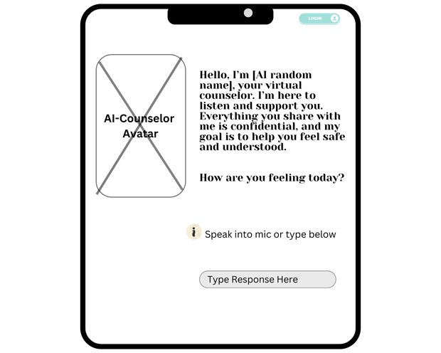
Wireframe • Mobile UI
ineedhelp — App Wireframes
Mid-fidelity screen wireframes defining the AI counselor conversation layout, input affordances, and login entry point.
My UI/UX work spans game interface design, web application wireframes, interactive prototypes, and design system documentation.
Understanding the user, the goal, and the constraints before a single wireframe is drawn.
Low-fidelity layouts that establish structure, hierarchy, and content flow.
High-fidelity interactive prototypes in Figma that simulate the real user experience.
Refining based on feedback until the design solves the original problem clearly.

Wireframe • Mobile UI
Mid-fidelity screen wireframes defining the AI counselor conversation layout, input affordances, and login entry point.
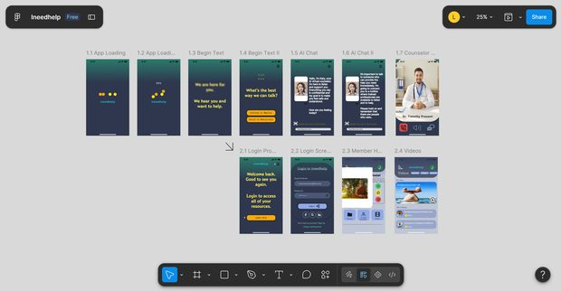
Figma • Prototyping
Clickable Figma prototype covering eleven linked screens across the guest and member user flows.
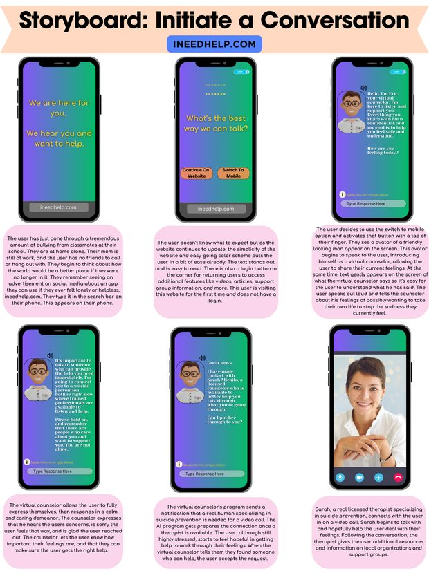
Storyboard • UX
Six-panel storyboard mapping a first-time user journey from arrival through AI triage to a live counselor handoff.
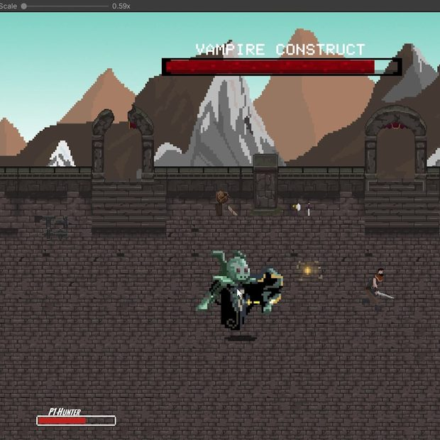
Game UI • HUD
HUD system for a 2D action prototype: player health, named boss health bar, and character select screen.
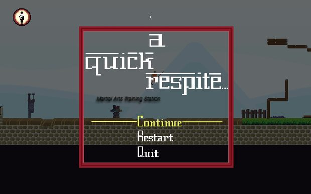
Game UI • Menus
Pause menu and in-game tutorial text box designed to teach mechanics without leaving the play space.
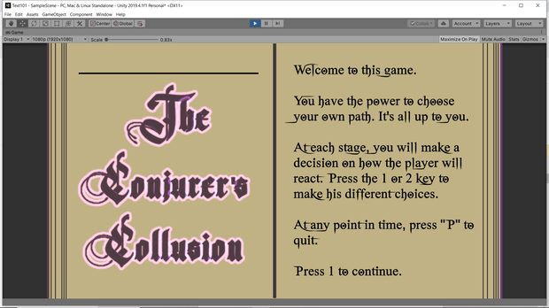
UI Layout • Typography
Full-screen "open book" layout for a choose-your-own-adventure prototype, using custom type and page-style framing.
An end-to-end UX concept for a mental health support app that greets a user in crisis, triages them through an AI virtual counselor, and escalates to a licensed human counselor when the conversation calls for it.
The work ran the full process: user personas, a hierarchical task analysis, hand sketches, mid-fidelity wireframes, high-fidelity mockups, and a clickable Figma prototype — with success measured against defined usability targets for task completion and return rate.
The core design problem was tone. Every screen had to feel calm and unhurried while still moving a distressed user toward real help quickly, so the interface leans on short lines, high-contrast type, generous spacing, and one decision per screen.
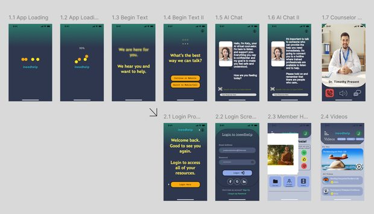
Two primary personas drove the design: a teenager in acute distress who needs anonymity and immediacy, and a working adult who needs support that fits into a lunch break.
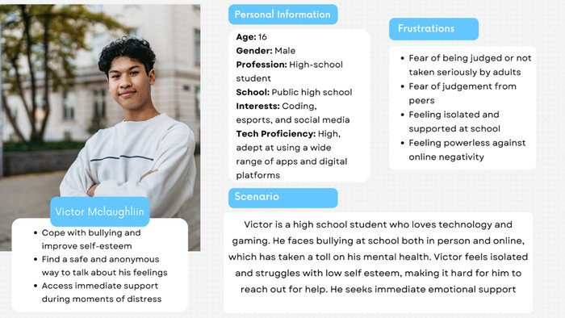
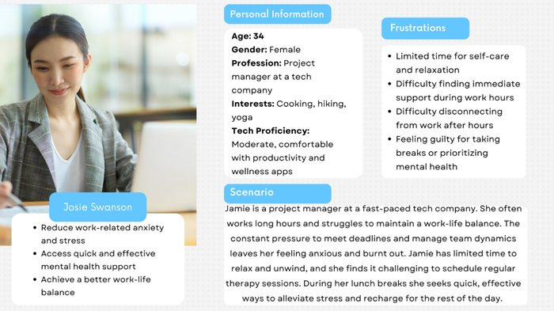
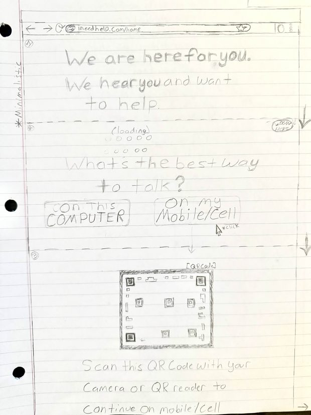
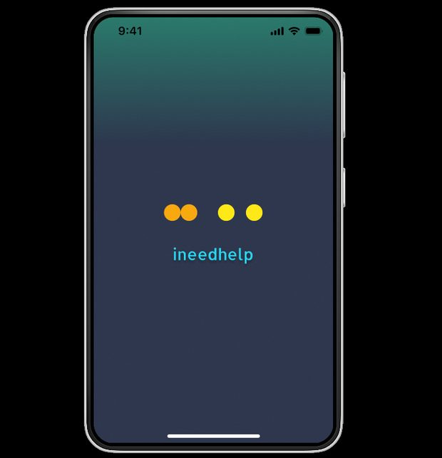
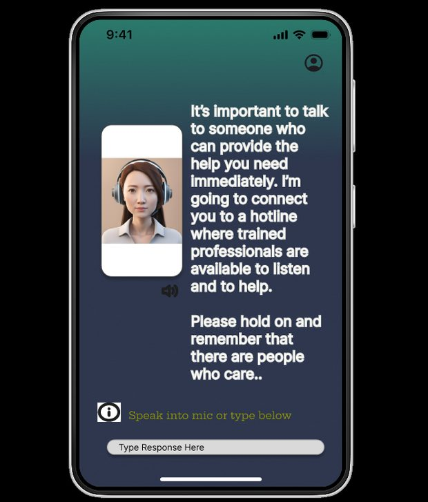
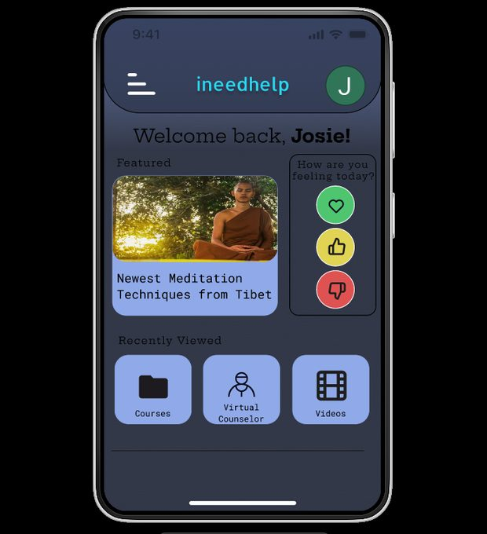
Interface design built for real playable builds, where clarity has to survive motion.
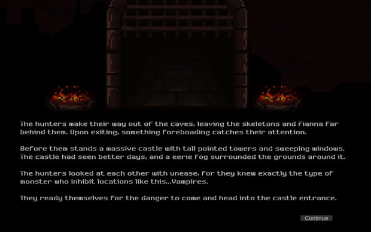
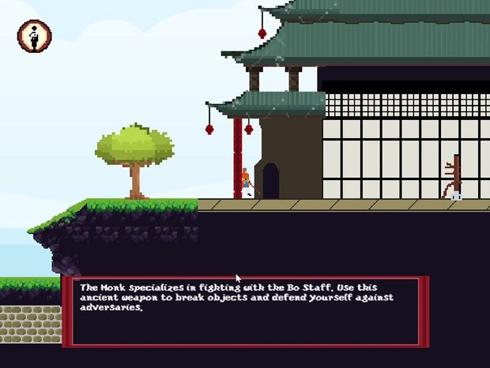
A planning tool I use for Two Little Wounds. I defined the structure — what sections exist, how research feeds design decisions, and what belongs on each screen — and built it with AI-assisted code rather than hand-designing the visual interface.
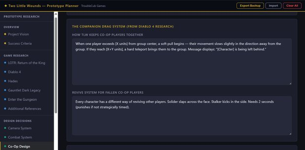
This portfolio site went through a full UX process before a line of markup was written: audience research, persona development, wireframing, a site map diagram, a design system, and high-fidelity mockups.
The challenge was designing for two audiences at once — game industry recruiters who scan fast, and freelance clients who read carefully. The result is a layered navigation structure and a visual hierarchy that puts work samples first.
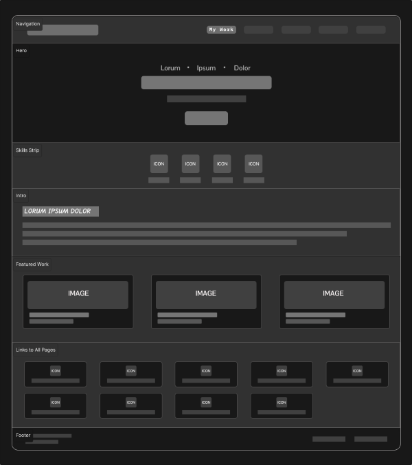
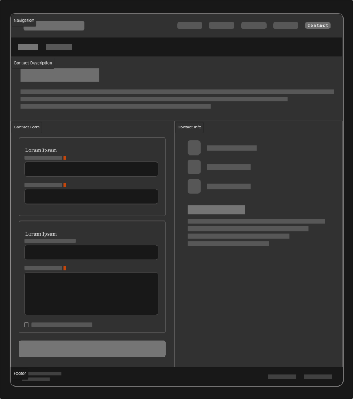